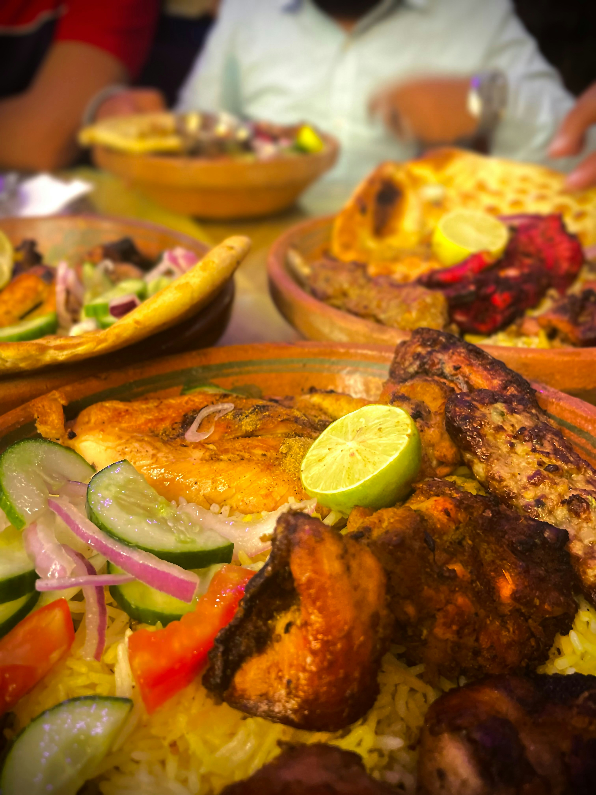

Pakistani cuisine is bold, flavorful, and deeply tied to culture and tradition. Heavily influenced by Mughal cooking, Central Asian spices, and South Asian ingredients, Pakistani food is known for its rich curries, grilled meats, and freshly baked breads. Every province has its own signature dishes and cooking styles that reflect the local culture and geography. Wikipedia – Pakistani Cuisine

Pakistani dishes – Pexels
Biryani is perhaps the most beloved Pakistani dish — fragrant basmati rice slow-cooked with tender meat, whole spices, caramelized onions, and saffron. Every family has their own recipe, and every city claims their version is the best.
Nihari is a slow-cooked beef stew originally made for royalty in the Mughal era. It is simmered overnight with bone marrow and warm spices, then served with naan and fresh garnishes like ginger, green chili, and lemon.
Chapli Kabab comes from Peshawar in Khyber Pakhtunkhwa and is a flat, spiced ground meat patty cooked in a wide pan with tomatoes and pomegranate seeds. Halwa Puri is a beloved breakfast dish — fluffy deep-fried bread served with sweet semolina halwa and spiced chickpeas, especially popular in Lahore. About Nihari
Pakistan's street food culture is legendary. From busy bazaars in Karachi to food streets in Lahore, the variety and flavor of street food is unmatched. Street food in Pakistan is not just a quick meal — it is a social experience enjoyed by all ages and walks of life. Wikipedia – Street Food in Pakistan
A crispy fried pastry filled with spiced potatoes or minced meat. One of the most popular snacks at any time of day.
Hollow crispy shells filled with spiced tamarind water and chickpeas. Known for their explosion of tangy flavor.
A savory mix of potatoes, chickpeas, yogurt, and chutneys topped with spices. Sweet, sour, and spicy all at once.
Deep-fried spiral sweets soaked in sugar syrup, crispy on the outside and syrupy inside. A classic Pakistani dessert.
Spiced ground meat skewered and grilled over charcoal. Smoky, juicy, and served hot with naan and chutney.
A refreshing yogurt-based drink, served sweet or salty. Lahori lassi is especially famous — thick and topped with cream.